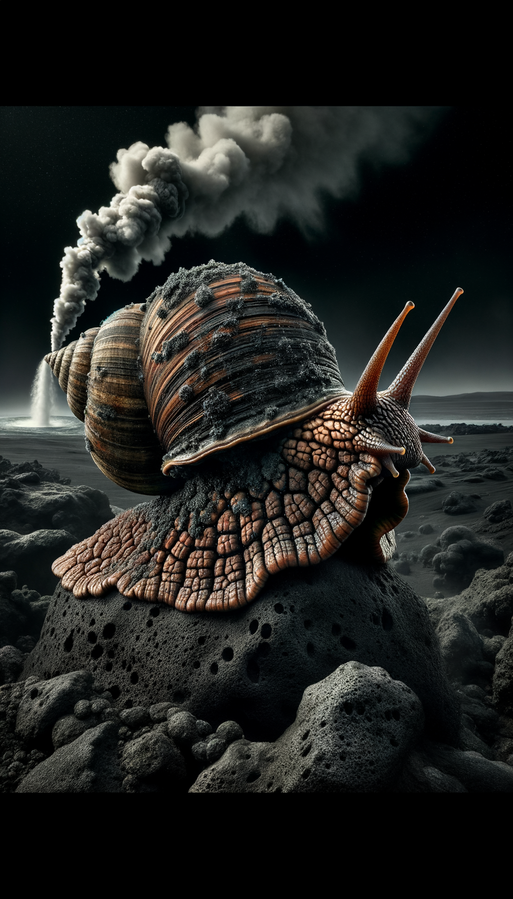
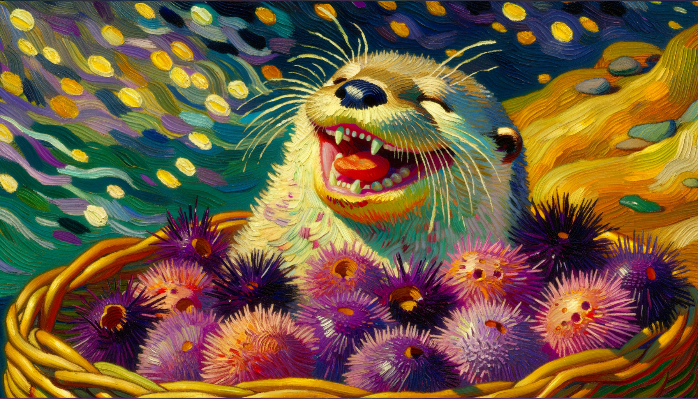

Issue #1
![[object Object]](polar-bears-antarctica/assets/images/magazine-cover.jpg)
[object Object]
Issue #2

[object Object]
Issue #3
![[object Object]](seals-of-the-world/assets/images/magazine-cover.jpg)
[object Object]
Issue #4
[object Object]
Issue #5

Explore amazing stories from the natural world